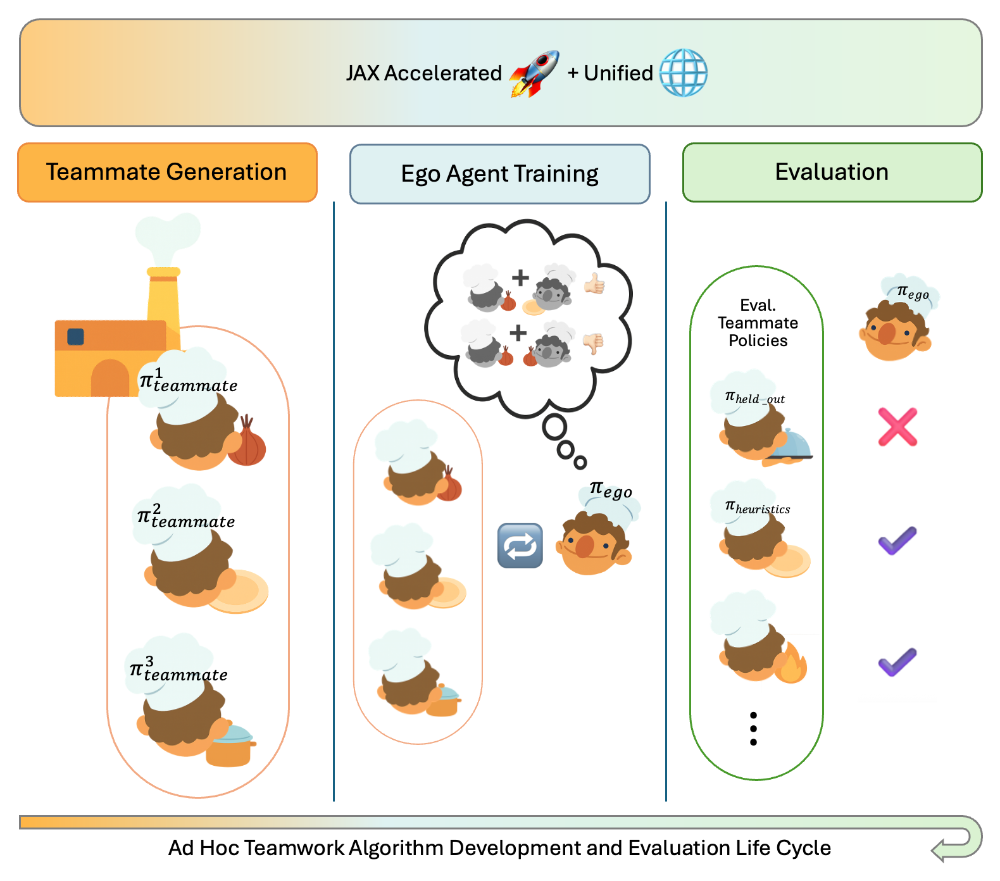

JAX-Accelerated · Ad Hoc Teamwork
A Unified JAX-based Benchmark for Ad Hoc Teamwork
JaxAHT is a JAX-based benchmark repository for Ad Hoc Teamwork — a unified toolkit for fast iteration across the entire AHT lifecycle: teammate generation, ego agent training, and evaluation against unseen teammates.
Overview
The development and evaluation of ad hoc teamwork (AHT) agents are often hindered by the lack of standardized implementations and reproducible evaluation pipelines, making it difficult to compare methods or build upon prior work. Experimentation is also often slow due to the lengthy reinforcement learning training periods required for many parts of the AHT training workflow, such as teammate generation or ego agent training.

The JaxAHT library addresses these challenges by introducing:
- A unified benchmark with transparent evaluation protocols and strong baselines for fair, replicable research.
- A JAX-based implementation of various AHT methods, which is significantly faster than previous PyTorch/Tensorflow implementations.
- A shared agent interface that allows agents trained by one algorithm to be seamlessly reused in other parts of the AHT workflow (i.e., teammate generation to ego agent training).
- A single-file implementation style inspired by JaxMARL and CleanRL, which makes it easier for users to understand and build upon the implemented AHT methods.
These design choices lower the barrier to entry, enable faster iterations through the AHT agent development process (i.e., code implementation, training, and evaluation), and provide a reliable foundation for advancing AHT research.
Design Philosophy
The JaxAHT library is designed to (1) facilitate research across the entire lifecycle of ad hoc teamwork, and (2) ease the evaluation of ad hoc agents (ego agents) for commonly used AHT benchmark tasks. As such, the benchmark includes:
- AHT algorithms
- Environments
- Evaluation teammates for each environment
- Best responses to the evaluation teammates
The library includes a variety of MARL/AHT algorithms, as AHT research often requires orchestrating multiple algorithms:
- An ego agent training algorithm
- A teammate generation algorithm
- A multi-agent reinforcement learning (MARL) algorithm
- A single-agent reinforcement learning method to act as a best response operator
Research focused on one type of algorithm can require other types for training/evaluation purposes. For example, to evaluate a teammate generation method, an ego agent training method is necessary. Similarly, an ego agent training method requires a set of training teammates, which may be generated by a teammate generation algorithm or a MARL algorithm.
This codebase aims to provide a unified interface for the above AHT procedures, to enable research on both individual procedures and combinations thereof. On the other hand, to facilitate fast iteration, we take inspiration from the single-file model used by projects such as JaxMARL and CleanRL and minimally modularize the code. Algorithms are largely implemented in a single-file format to enable researchers to easily understand and build upon existing methods. However, the agent interface is shared by all methods, to allow agents trained by one algorithm to easily be used by another algorithm — a common workflow for AHT research.
Our modularization is restricted to environments, agents, and populations, which allows us to cleanly interface the algorithm types above, while placing most of the logic for any single algorithm within a single file.
Available Algorithms
Eleven implementations across ego agent training, teammate generation, MARL, and open-ended training.
| Category | Algorithm | Description | Paper |
|---|---|---|---|
| Ego Agent Training | PPO | Trains a PPO agent against a population of homogeneous partner agents. | Schulman et al. 2017 |
| LIAM | Trains a LIAM agent against a population of homogeneous partner agents. | Papoudakis et al. 2021 | |
| MeLIBA | Trains a MeLIBA agent against a population of homogeneous partner agents. | Zintgraf et al. 2022 | |
| Teammate Generation | FCP | Generates diverse teammates using varying seeds and checkpoints of IPPO. | Strouse et al. 2021 |
| BRDiv | Generates diverse teammates using best response diversity (BRDiv) metric. | Rahman et al. 2022 | |
| LBRDiv | Generates diverse teammates via emulating the minimum coverage set. | Rahman et al. 2024 | |
| CoMeDi | Generates diverse teammates by optimizing mixed-play. | Sarkar et al. 2023 | |
| MARL | IPPO | Multi-agent reinforcement learning using independent PPO agents with parameter sharing. | Yu et al. 2022 |
| Open-Ended Training | ROTATE | Open-ended training using cooperative regret maximization. | Wang et al. 2025 |
| COLE | Builds a cooperative policy pool using cross-play performance and prioritized partner sampling. | Li et al. 2023 | |
| TrajeDi | Trains a diverse confederate population using self-play, cross-play, and trajectory diversity. | Lupu et al. 2021 |
Scroll the table horizontally to see all columns.
Supported Environments
Four environments and nine task variants, each shipping with a set of heldout evaluation teammates.
| Environment | Source | Description | Variants | Eval Teammates |
|---|---|---|---|---|
| Level-Based Foraging (LBF) | Jumanji | Cooperative foraging environment where agents must work together to collect food. | lbf_7x7_nolevels (7x7, 3 food, no levels), lbf_12x12 (12x12, 6 food, with levels) |
✓ |
| Overcooked-v1 | JaxMARL | Cooperative cooking environment where agents must coordinate to prepare and serve dishes. | asymm_advantages, coord_ring, counter_circuit, cramped_room, forced_coord |
✓ |
| Hanabi | JaxMARL | Two-player cooperative card game with partial observability and implicit communication. | 5 colors, 5 ranks | ✓ |
| Mini-Hanabi | JaxMARL | Smaller Hanabi task for faster experiments. | 3 colors, 3 ranks | ✓ |
Scroll the table horizontally to see all columns.
Evaluation Data
JaxAHT ships the policies you need to evaluate an ego agent, not just the code to train one. Every task comes with a set of heldout evaluation teammates, and with trained best responses to those teammates. Both are released publicly on Hugging Face.
-
Heldout evaluation teammates —
the LBF, Overcooked-v1, Hanabi, and Mini-Hanabi policies referenced by
evaluation/configs/global_heldout_settings.yaml, along with the best heldout returns used for normalization. Roughly 10 GB, fetched bypython download_eval_data.py. - Best responses to the heldout teammates — trained best-response policies for the heldout teammates, used as the best-response set when computing the heldout cross-play matrix. Roughly 74 GB across nine task directories, so it is downloaded per task rather than by default.
Citation
If you find this repository useful for your research, please cite:
@misc{jaxaht2025,
author = {Learning Agents Research Group},
title = {JaxAHT},
year = {2025},
month = {September},
note = {Version 1.0.0},
url = {https://arxiv.org/abs/2609.13716},
}See Also
This project was inspired by the following JAX-based RL repositories. Please check them out!
- JaxMARL — a library with JAX-based MARL algorithms and environments.
- Jumanji — a library with JAX implementations of several MARL environments.
- Minimax — a library with JAX implementations of single-agent UED algorithms.
- ROTATE — code for the ROTATE paper (Wang et al. 2025), which this benchmark is built off of.